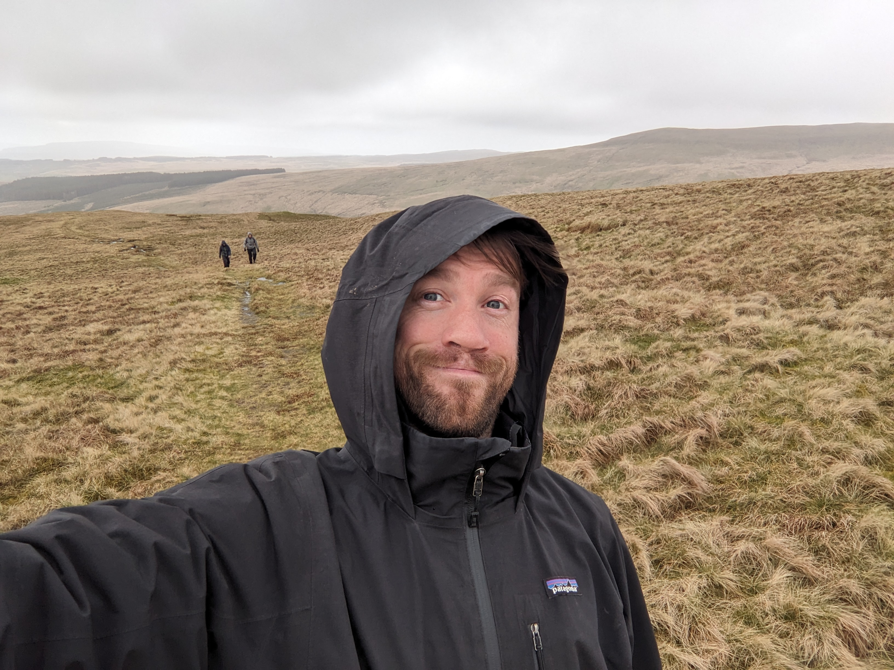

About me
As an IC designer, I'm comfortable working in ambiguity, and using design approaches to navigate uncertainty.
Generative research, experimental design and learning by doing to get real-world input and feedback. Rapid ideation and prototyping to evaluate opportunities and de-risk progress. And distilling complexity to make sense of complex processes and systems.
As a manager and leader, I support agile multi-disciplinary teams to do their best work. I've built and supported healthy design teams and communities of practice, managing progression, performance and challenges.

Lovely words from colleagues
“He thrives in ambiguity - he's able to define the right plan, lead the process with confidence, and bring clarity to even the most uncertain topics. His work has helped shape product direction/vision and unlock opportunities we wouldn’t have seen otherwise.”
Ben - Strategic Projects Lead
“Giles is highly skilled at navigating ambiguity and complexity…and he has a natural ability to think through different use cases and design workflows to make it easier for customers and the business to get the best outcome.”
Ale - Product Design Director
“You run a great workshop. But most importantly, use workshops as a channel for helping us take the next pragmatic step in a process, even if we're working with lots of uncertainty.”
Izzy - Senior Product Manager
“Over the last 12 months there's been many team and vision changes, and good communication from your side really helped to make those transitions a bit easier.”